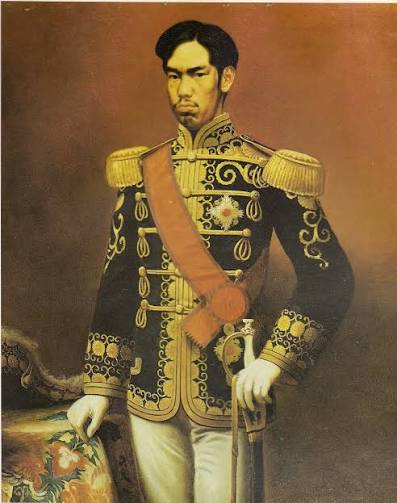
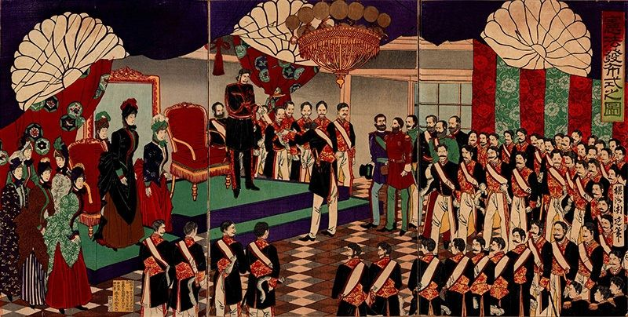
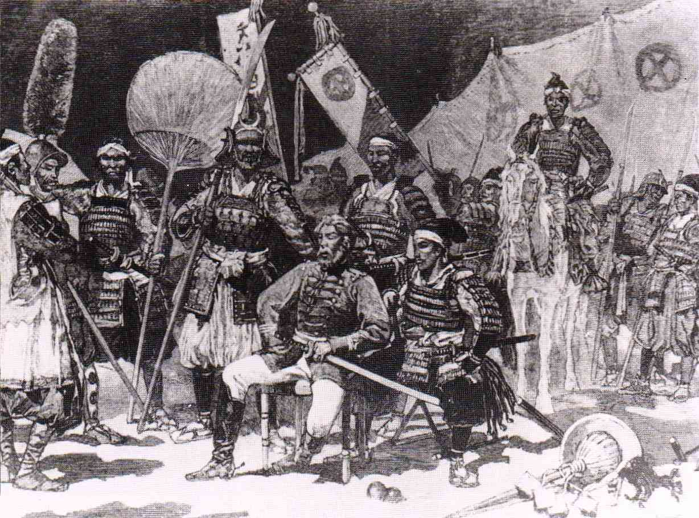

⚙
01
State-led industry
The government invested in factories, railways, shipyards, mines, telegraphs, banking, education and transportation.
Factories → Weapons → Ships
1868 — 1905 • A turning point in world history
Explore how Japan transformed itself after the Meiji Restoration — and how that transformation reshaped international relations across Asia.
Before the transformation
Before the Meiji Restoration of 1868, Japan was ruled for around 250 years by the Tokugawa shogunate. The emperor existed, but political authority belonged to the shogun.
Foreign contact and trade were heavily restricted under a policy often described as sakoku. Society was hierarchical, the economy was largely agricultural, and Japan lacked the industrial and military technology of European powers.
If it remained weak and isolated, it could potentially become another victim of Western imperialism.
1853
American Commodore Matthew Perry arrived with modern warships and demanded that Japan open its ports. The encounter exposed Japan's vulnerability.
1868

“Rich country, strong army.”
The new government aimed to create a modern, centralized, industrialized and militarily powerful state strong enough to resist Western domination.


Why did Japan industrialize so rapidly?
The government invested in factories, railways, shipyards, mines, telegraphs, banking, education and transportation.
Japan studied different Western powers and adopted useful technology, military organization, administration and industrial practices.
A national education system expanded literacy, scientific knowledge, technical skills and administrative capacity.
Japan created a modern conscript army, military academies, artillery, rifles, factories, railways and a powerful navy.
Industries established by the government were sometimes sold to private entrepreneurs, helping powerful business groups develop.
Limited supplies of coal, iron, oil and other raw materials encouraged Japan to look beyond its borders.
Japan did not copy one country.
Japanese officials and students travelled overseas to examine systems they considered useful.
Japan drew on German models for military organization and elements of its legal and political system.
Tap a milestone
Japan realized that remaining weak and isolated could leave it vulnerable to Western imperialism.
1904 — 1905
Japan fought the Russian Empire over competing interests in Manchuria and Korea — and unexpectedly won.
The world changed with Japan.
Japan's victory over Russia showed that Asian modernization could successfully challenge European imperial power.
Japan shifted from a potential victim of imperialism to an imperial state, expanding into Taiwan, Korea, China and Manchuria.
Japan's victory over Qing China changed the balance of power in East Asia and encouraged foreign competition for influence in China.
Russia lost influence in Korea and southern Manchuria, while Japan emerged as its major rival in East Asia.
The Anglo-Japanese Alliance integrated Japan into the great-power diplomatic system and reduced its isolation.
Japan's victory inspired some Asian nationalists by demonstrating that an Asian state could defeat a European imperial power.
Japan's expansion increased competition with the United States, contributing to later conflict in the Pacific.
Military success and expansion encouraged nationalism, imperialism and a belief that territorial control could protect national interests.
The most important argument
It transformed from a country trying to escape Western imperialism into an imperial power competing with Western states for territory, resources and influence.